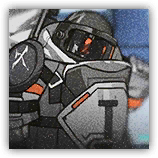
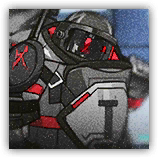

粉碎攻坚手 Defense Crusher
近战 物理；精英 任意
|
 |
整合运动的高级精英单位。穿着沉重的防爆护具。虽然其攻击速度缓慢，但是他们装备的重型钝器产生的破坏力极大，且我方单位会在遭受其若干次攻击后被晕眩。请务必小心。 |
粉碎攻坚手丨Defense Crusher
大型类人生物（任意），混乱中立
| AC 20 | 先攻 -1（9） |
| HP 104（11d10+44） | |
| 速度 25 尺 | |
| 调整 | 豁免 | 调整 | 豁免 | 调整 | 豁免 | |||||||||
|---|---|---|---|---|---|---|---|---|---|---|---|---|---|---|
| 力量 | 21 | +5 | +5 | 敏捷 | 9 | -1 | -1 | 体质 | 19 | +4 | +4 | |||
| 智力 | 10 | +0 | +0 | 感知 | 10 | +0 | +0 | 魅力 | 9 | -1 | -1 |
| 技能 运动+8 |
| 装备 巨锤 |
| 感官 被动察觉10 |
| 语言 通用语，以及一门任意语言 |
| CR 6（XP 2,300；PB +3） |
特质 Traits
钝法护甲 Blunt Armor。对粉碎攻坚手发动的法术攻击检定具有优势。粉碎攻坚手为抵抗法术效应而进行的豁免检定具有劣势。
动作 Actions
多重攻击 Multiattack。粉碎攻坚手发动两次巨锤攻击。
巨锤 Greathammer。近战武器攻击：+8，触及5尺。命中：15（3d6+5）点钝击伤害。若目标生物体型不超过巨型，则应击倒地。
粉碎重击 Critical Crush（充能4~6）。 体质豁免检定：DC16，粉碎攻坚手触及的一个目标，以及其周围5尺每个所选的生物。失败：33（8d6+5）钝击伤害并震慑直到其下回合结束。成功：仅受半伤。
粉碎攻坚组长 Defense Crusher Leader
近战 物理；精英 任意
|
 |
整合运动的高级精英单位。穿着沉重的防爆护具，比一般的粉碎攻坚手更具威胁。虽然其攻击速度缓慢，但是他们装备的重型钝器产生的破坏力极大，且我方单位会在遭受其若干次攻击后被晕眩。请务必小心。 |
粉碎攻坚组长丨Defense Crusher Leader
大型类人生物（任意），混乱中立
| AC 24 | 先攻 -1（9） |
| HP 168（16d10+80） | |
| 速度 25 尺 | |
| 调整 | 豁免 | 调整 | 豁免 | 调整 | 豁免 | |||||||||
|---|---|---|---|---|---|---|---|---|---|---|---|---|---|---|
| 力量 | 22 | +6 | +7 | 敏捷 | 9 | -1 | -1 | 体质 | 21 | +5 | +9 | |||
| 智力 | 11 | +0 | +0 | 感知 | 12 | +1 | +1 | 魅力 | 9 | -1 | -1 |
| 技能 运动+8 |
| 装备 巨锤 |
| 感官 被动察觉10 |
| 语言 通用语，以及一门任意语言 |
| CR 10（XP 5,900；PB+4） |
特质 Traits
钝法护甲 Blunt Armor。对粉碎攻坚手发动的法术攻击检定具有优势。粉碎攻坚手为抵抗法术效应而进行的豁免检定具有劣势。
动作 Actions
多重攻击 Multiattack。粉碎攻坚手发动两次巨锤攻击。
巨锤 Greathammer。近战武器攻击：+10，触及5尺。命中：33（8d6+5）点钝击伤害。若目标生物体型不超过巨型，则应击倒地。
粉碎重击 Critical Crush（充能4~6）。 体质豁免检定：DC18，粉碎攻坚手触及的一个目标，以及其周围5尺所有选择的生物。失败：47（12d6+5）钝击伤害并震慑直到其下回合结束。成功：仅受半伤。